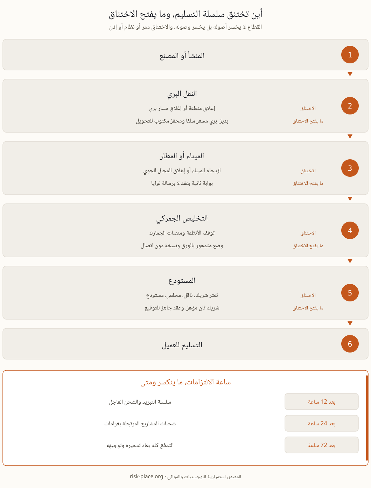

لو قارنتم سجل الحوادث في اللوجستيات بسجلها في الصناعة لوجدتم غياب بند بارز، الخسارة الكلية للأصول. الشاحنات موجودة والحاويات موجودة والطاقم موجود، والمفقود ممر أو نظام أو إذن. الحاوية المبردة تقف على الرصيف بحمولتها كاملة ولا أحد يستطيع الإفراج عنها لأن منصة التخليص متوقفة، والطائرة جاهزة والشحنة معبأة والمجال الجوي مغلق. هذه في جوهرها مشكلات وصول ومعلومات، وهذا خبر جيد لمن يخطط، لأن مشكلات الوصول لها حلول التفاف حقيقية بشرط أن تصمم قبل اليوم الذي تحتاجونها فيه. ومشكلة القطاع أن حلول الالتفاف تبدو بديهية على الورق وتنهار في التنفيذ، فالميناء البديل موجود على الخريطة لكن لا عقد معه، والناقل الثاني معروف بالاسم لكن لا أحد سأله عن سعره في يوم ذروة. ومن أراد الإطار العام لهذا الانضباط يجده في صفحة تعريف استمرارية الأعمال.
أربعة سيناريوهات تفسر أغلب اضطرابات القطاع في المنطقة، ولكل واحد منها ما يتوقف فعلا وسؤال استمرارية واحد ينبغي أن يكون جوابه مكتوبا قبل وقوعه.
| السيناريو | ما يتوقف فعلا | سؤال الاستمرارية |
|---|---|---|
| إغلاق مجال جوي أو منطقة | الرحلات تتحول والنطاق يغلق، والبضاعة والطواقم سليمة لكنها في مكان آخر | أي التزامات تنكسر بعد 12 ساعة، وأيها بعد 24 ساعة، وأيها بعد 72 ساعة، وما الذي يعيد توجيهها |
| ازدحام الميناء أو إغلاقه | السفن تنتظر أو تتحول، والحاويات تجلس على الرصيف وتتراكم رسوم الأرضيات | أي بوابة بديلة وبأي كلفة، ومن يملك صلاحية إطلاق التحويل |
| توقف الأنظمة | أنظمة النقل والمستودعات ومنصات الجمارك تتجمد، ومعها الحجوزات والتتبع والبيانات الجمركية | هل تعملون بوضع متدهور ببيانات ورقية وتأكيدات هاتفية، ولكم من الوقت |
| تعثر شريك مفتاحي | ناقل أو مخلص جمركي أو مشغل مستودع يتوقف فجأة | من المصدر الثاني المتفق عليه سلفا، وهل العقد جاهز للتوقيع أم مجرد نية |

في يوم الاضطراب تصبح السعة النادرة هي القرار، لا الشحنة. ومن لم يرتب التزاماته مسبقا سيرتبها الحدث نيابة عنه، غالبا بمنطق من اتصل أولا. وليست الشحنات سواء، فالحاوية المبردة تفقد قيمتها بالساعة وقد تفقدها كلها، وشحنة المشروع تحمل غرامة تأخير يومية منصوصا عليها في العقد، والشحن العادي يحتمل يوما أو يومين دون أثر تجاري يذكر. والأداة التي ترتب هذه الفروق هي تحليل أثر الأعمال، وهو هنا لا يرتب الأقسام بل يرتب الالتزامات بكلفة التأخير للساعة الواحدة، وهذا الترتيب بالذات هو ما يقود كل قرار إعادة توجيه لاحق. ومن الترتيب نفسه تشتق أهداف زمن التعافي للخدمات المساندة التي تحمل هذه الالتزامات، من نظام الحجز إلى غرفة التحكم، وتفصيلها في صفحة أهداف التعافي. والفرز مكتوب مسبقا يوفر ساعات ثمينة في اليوم الذي لا يملك فيه أحد وقتا للنقاش.
قيمة أي خطة استمرارية لوجستية تحددها جودة بدائلها، لا عدد صفحاتها. والبديل المفيد له ثلاث صفات، مسعر ومتعاقد عليه ومجرب مرة على الأقل، وما نقص عن ذلك أمنية لها فهرس محتويات. والبدائل المعتادة في المنطقة معروفة، بوابة ثانية بميناء مجاور، وناقل ثان بعقد إطاري موقع لا برسالة نوايا، واستبدال بري للجوي عبر الجسر البري حين يغلق المجال، ومستودع احتياطي متفق على شروط دخوله. والشرط الحاكم أن تحسب الكلفة والمهلة سلفا لكل بديل، لأن أحدا لا يملك وقتا لتسعير الخيارات أثناء الحدث، ولأن مدير العمليات الذي لا يعرف الفرق بين البديلين سيختار بالحدس ثم يدافع عن اختياره أمام المالية لشهور. ويحسن ربط كل بديل بمحفز مكتوب، مثل تجاوز انزلاق موعد الوصول حدا محددا أو إغلاق النطاق رسميا، حتى يبدأ التحويل بقرار معد سلفا لا بنقاش يبدأ من الصفر.
توقف الأنظمة لا يعني توقف الأعمال إلا إذا سمحتم بذلك. والنسخة الورقية والهاتفية من الحجز والتتبع والتخليص هي الفرق بين الجملتين، وشرطها الوحيد أن تكون قد جربت مرة واحدة على الأقل قبل الحاجة إليها، لأن أول محاولة لتشغيلها تكتشف دائما نقصا في البيانات المرجعية أو في الصلاحيات. ويحتاج الوضع المتدهور إلى نسخة دون اتصال من البيانات التشغيلية الحيوية، قوائم العملاء وأرقام الحجوزات وبيانات الشحنات الجارية، وهذه مسؤوليتكم حتى لو كانت المنصة نفسها ملكا لمزود سحابي. ويوازي ذلك انضباط التواصل، فالعملاء يغفرون التأخير أسرع بكثير مما يغفرون الصمت، والمكتوب مسبقا هو من يتصل بأهم عشرين حسابا وبأي تقدير جديد وخلال أي ساعة. ويبقى شرط أخير، صلاحية الساعات الأولى، فإعادة التوجيه تنفق المال قبل أن توفره، وشخص مسمى يجب أن يستطيع الالتزام بالإنفاق في الثالثة فجرا دون انتظار لجنة، وترتيب تلك الدقائق في صفحة الساعة الأولى، وحدود صلاحيات إدارة الأزمات في تعريف خطة الاستمرارية.
الموانئ والمطارات ومراكز اللوجستيات الكبرى تقع داخل محيط البنية التحتية الحيوية حيث يسري المعيار الوطني NCEMA 7000، وهذا معروف لمشغليها. الأقل وضوحا أن المتطلب لا يقف عند حدود المشغل، فكبار الشاحنين والعملاء المرتبطون بالحكومة يمررون استبيانات الاستمرارية نزولا إلى وكلاء الشحن ومزودي الطرف الثالث. وإذا كان بين عملائكم مشغل بنية تحتية حيوية فتوقعوا أن تقيم ترتيباتكم بوصفها جزءا من امتثاله هو، لأن واجب تقييم المورد في المعيار الوطني يصلكم بالعقد لا بالتفتيش. وعمليا يعني ذلك أن دليل الاستمرارية صار بندا في ملف التأهيل لدى القطاع، وأن غيابه يخصم من التقييم الفني قبل أن يصل ملفكم إلى السعر، وما ينساب من المعيار إلى العقود مفصل في صفحة الموردين والمقاولين (بالإنجليزية)، وخريطة المتطلبات في الدولة كلها في صفحة استمرارية الأعمال في الإمارات.
حين يصبح السؤال من يقرر التحويل ومن يجيب أمام المجلس، ينتقل الملف من العمليات إلى حوكمة المرونة، وهي مادة برنامج ERGP، أول شهادة في حوكمة المرونة متاحة بالكامل باللغة العربية وبالإنجليزية أيضا. ست وحدات وستة مخرجات عملية وشهادة قابلة للتحقق.
تعرف على برنامج ERGP